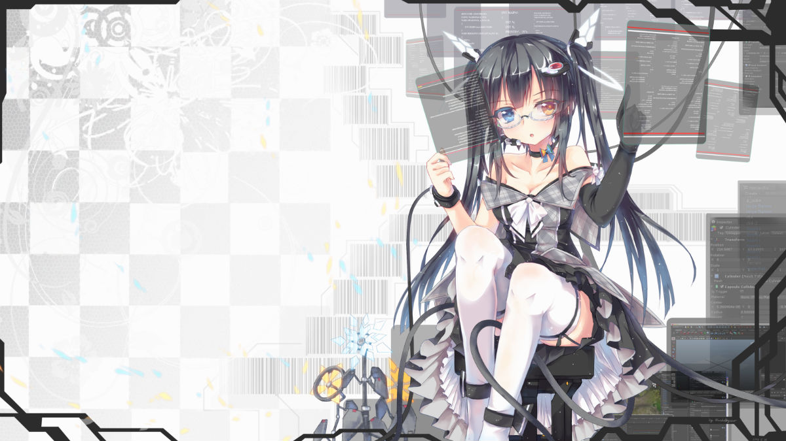
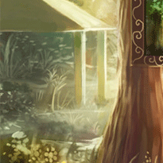
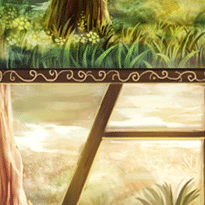
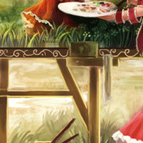
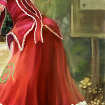

东风小站
登录
新闻
体育
财经
娱乐
科技
图片
新闻
体育
财经
娱乐
科技
图片
css居中总结
博客
ffery07的博客
慕课网资料
学院
专业学习资料
jquery-3.3.1（最新）
下载
各种资源下载
click和blur冲突问题
论坛
相互交流讨论

用CSS 实现元素垂直居中,有哪些好的方案
问答
有问必答

商城
增值服务

小站限时开放注册中
活动
定期开展各种活动

更多
10
在线
100
会员
100
主题
200
帖子